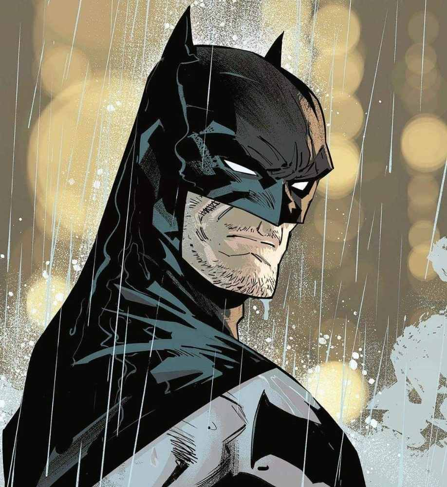

Welcome to the Watchtower
Bringing operational excellence to the computer science industry.
Network Computing
Bringing operational excellence to the computer science industry.
I am a dedicated Network Computing student from UNIMAS, with a strong background in campus leadership, student affairs, and operational support. Throughout my academic journey, I have managed student welfare, facilitated orientation programs, and coordinated campus events while building technical and analytical skills.
(Click a card to flip and decrypt project details)
